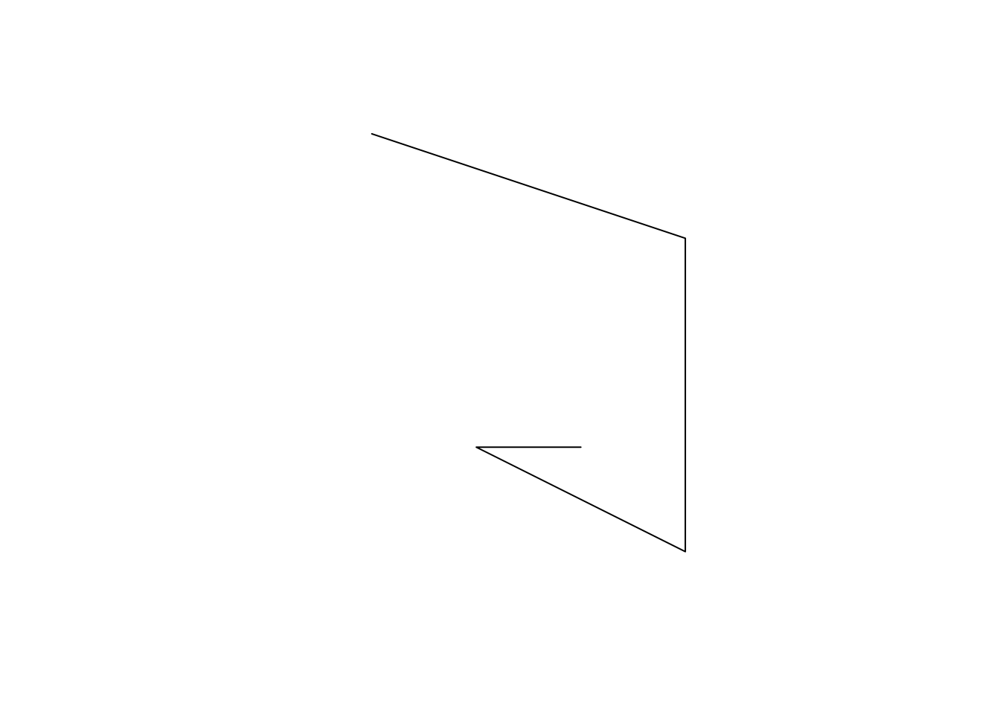
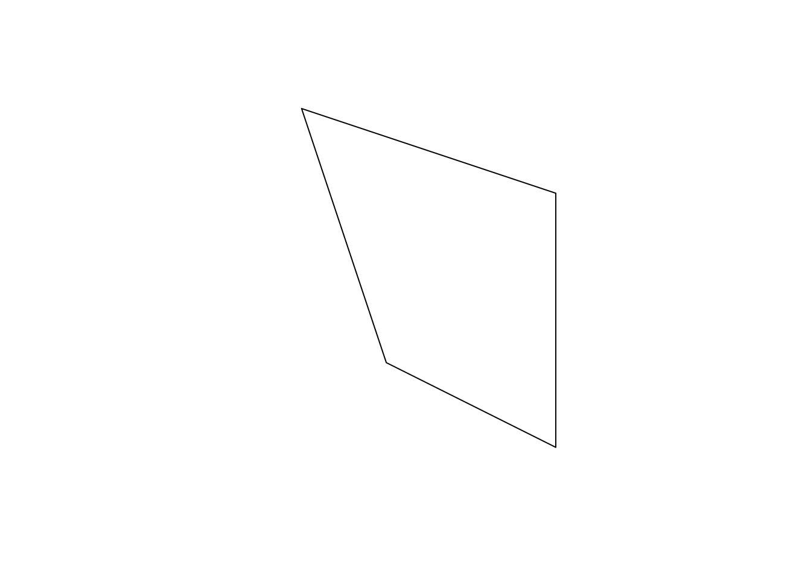
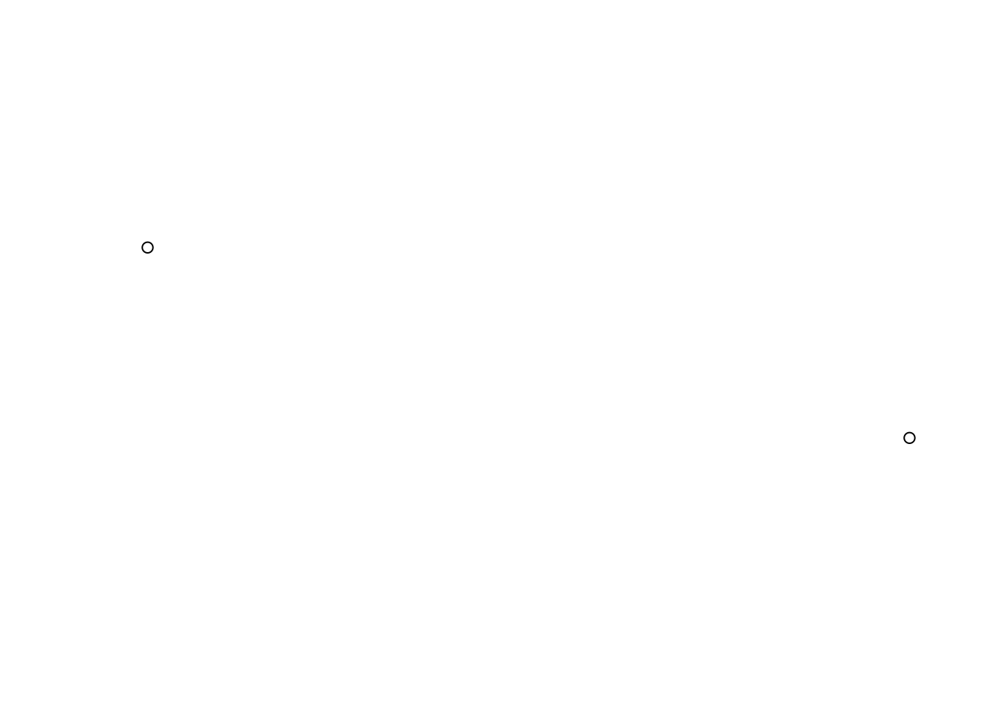
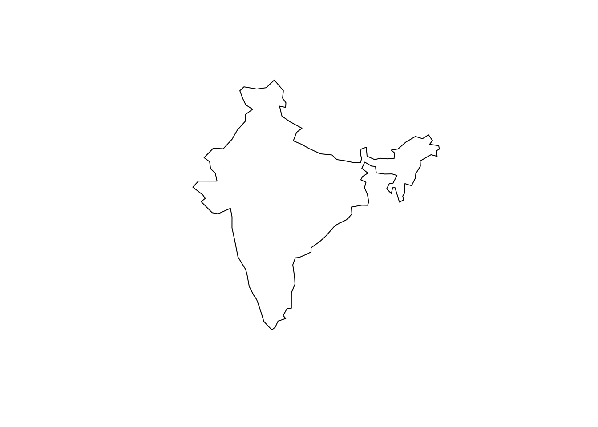
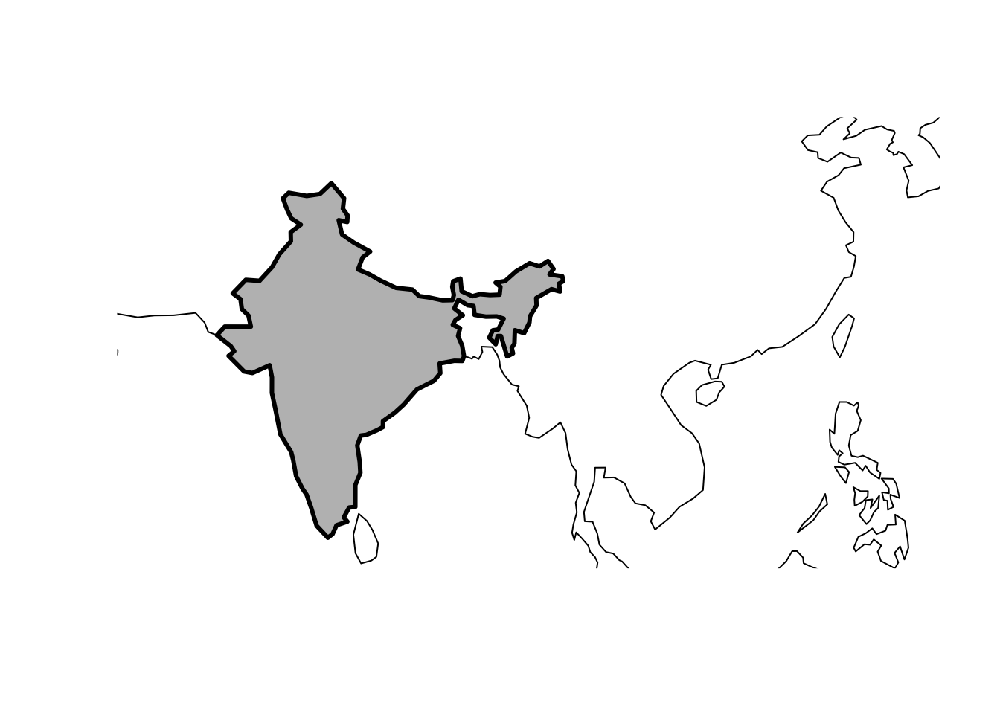
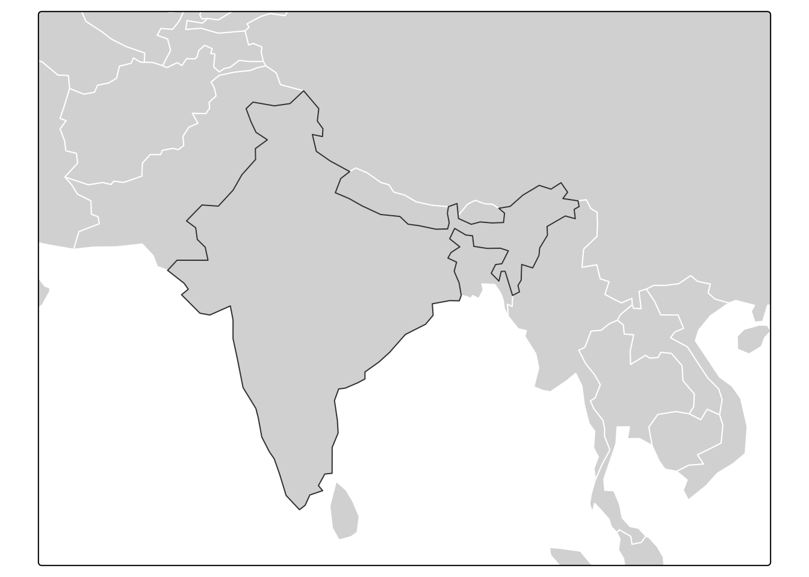
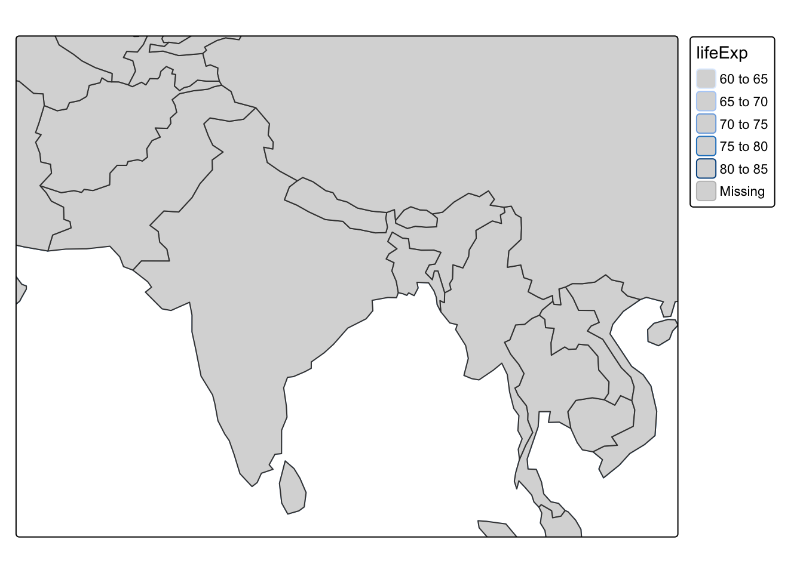
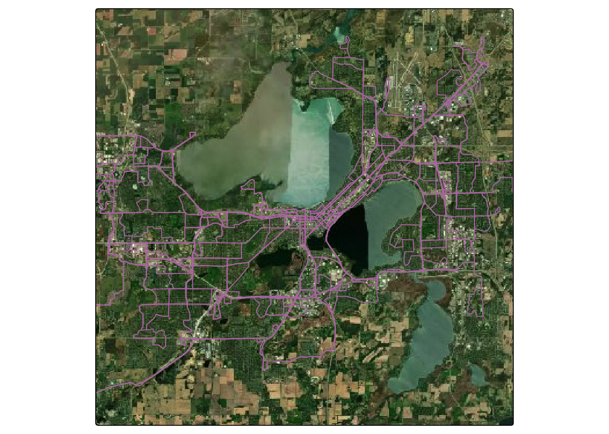
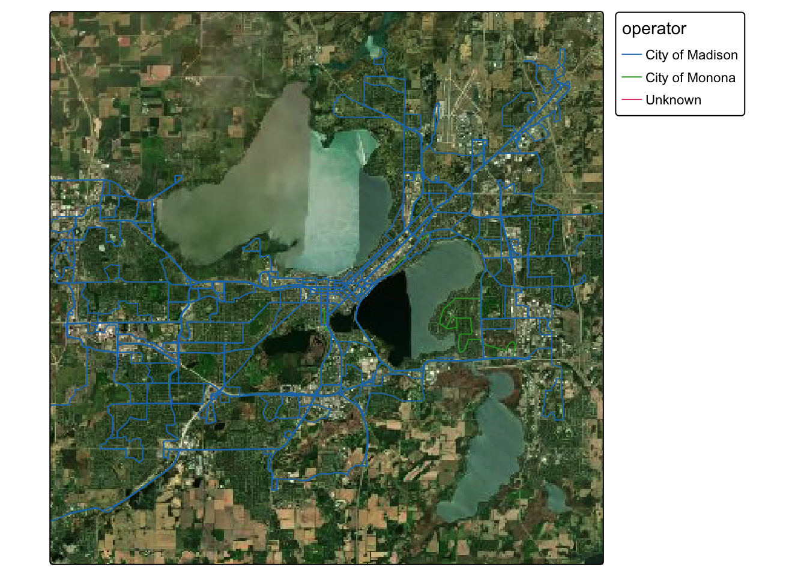

library(ceramic)
library(knitr)
library(sf)
library(spData)
library(tidyverse)
library(tmap)
theme_set(theme_minimal())Vector Data
Manipulating and visualizing spatial vector data.
- As mentioned previously, vector data are used to store geometric spatial data. Specifically, there are 7 types of geometric information that are commonly used, as given in the figure below.
include_graphics("https://krisrs1128.github.io/stat479/posts/2021-03-02-week7-2/sf-classes.png")
- We can construct these geometric objects from scratch. For example, starting from the defining coordinates, we can use
st_pointto create a point object,
# make a point
p <- st_point(c(5, 2))
plot(p)
st_linestring to create a linestring,
# make a line
linestring_matrix <- rbind(c(1, 5), c(4, 4), c(4, 1), c(2, 2), c(3, 2))
p <- st_linestring(linestring_matrix)
plot(p)
and st_polygon to create a polygon.
# make a polygon
polygon_list <- list(rbind(c(1, 5), c(2, 2), c(4, 1), c(4, 4), c(1, 5)))
p <- st_polygon(polygon_list)
plot(p)
- Different geometries can be combined into a geometry collection, using
sfc.
point1 <- st_point(c(5, 2))
point2 <- st_point(c(1, 3))
points_sfc <- st_sfc(point1, point2)
plot(points_sfc)
- Real-world vector datasets are more than just these geometries — they also associate each geometry with some additional information about each feature. We can add this information to the geometries above by associating each element with a row of a data.frame. This merging is accomplished by
st_sf, usinggeometryto associate a rawst_geomeach row of a data.frame.
lnd_point <- st_point(c(0.1, 51.5))
lnd_geom <- st_sfc(lnd_point, crs = 4326)
lnd_attrib = data.frame(
name = "London",
temperature = 25,
date = as.Date("2017-06-21")
)
lnd_sf = st_sf(lnd_attrib, geometry = lnd_geom)Visualization
- Vector data can be directly plotted using base R. For example, suppose we want to plot the boundaries of India, within it’s local context. We can use the
worlddataset, provided by thespDatapackage. Each row of theworldobject contains both the boundary of a country (in thegeomcolumn) and information about its location and population characteristics.
data(world)
head(world)Simple feature collection with 6 features and 10 fields
Geometry type: MULTIPOLYGON
Dimension: XY
Bounding box: xmin: -180 ymin: -18.28799 xmax: 180 ymax: 83.23324
Geodetic CRS: WGS 84
# A tibble: 6 × 11
iso_a2 name_long continent region_un subregion type area_km2 pop lifeExp
<chr> <chr> <chr> <chr> <chr> <chr> <dbl> <dbl> <dbl>
1 FJ Fiji Oceania Oceania Melanesia Sove… 1.93e4 8.86e5 70.0
2 TZ Tanzania Africa Africa Eastern … Sove… 9.33e5 5.22e7 64.2
3 EH Western S… Africa Africa Northern… Inde… 9.63e4 NA NA
4 CA Canada North Am… Americas Northern… Sove… 1.00e7 3.55e7 82.0
5 US United St… North Am… Americas Northern… Coun… 9.51e6 3.19e8 78.8
6 KZ Kazakhstan Asia Asia Central … Sove… 2.73e6 1.73e7 71.6
# ℹ 2 more variables: gdpPercap <dbl>, geom <MULTIPOLYGON [°]>This makes the plot, using dplyr to filter down to just the row containing the India geometry.
india_geom <- world %>%
filter(name_long == "India") %>%
st_geometry()
plot(india_geom)
- Using base R, we can also layer on several vector objects, using
add = TRUE.
world_asia <- world %>%
filter(continent == "Asia")
plot(india_geom, expandBB = c(0, 0.2, 0.1, 1), col = "gray", lwd = 3)
plot(st_union(world_asia), add = TRUE)
- We can also use
tm_polygonsin tmap. To change the coordinates of the viewing box, we can set thebbox(bounding box) argument.
bbox <- c(60, 5, 110, 40)
tm_shape(world_asia, bbox = bbox) +
tm_polygons(col = "white") +
tm_shape(india_geom) +
tm_polygons()
- We can also encode data that’s contained in the vector dataset.
tm_shape(world_asia, bbox = bbox) +
tm_polygons(col = "lifeExp") +
tm_polygons()
- Even in this more complex setup, where we work with background images and vector data rather than standard data.frames, we can still apply the kinds of visual encoding ideas that we are familiar with. For example, we can still color code or facet by fields in the vector dataset. To illustrate, we revisit the bus route data from the last lecture and distinguish between buses operated by the cities of Madison vs. Monona. Before plotting, we fetch the underlying data.
Sys.setenv(MAPBOX_API_KEY="pk.eyJ1Ijoia3Jpc3JzMTEyOCIsImEiOiJjbDYzdjJzczQya3JzM2Jtb2E0NWU1a3B3In0.Mk4-pmKi_klg3EKfTw-JbQ")
basemap <- cc_location(loc= c(-89.401230, 43.073051), buffer = 15e3)
bus <- read_sf("https://uwmadison.box.com/shared/static/5neu1mpuh8esmb1q3j9celu73jy1rj2i.geojson") |>
mutate(
operator = ifelse(is.na(operator), "Unknown", operator),
operator_color = case_when(
operator == "City of Madison" ~ "#1f77b4",
TRUE ~ "#2ca02c"
)
)
tm_shape(basemap) +
tm_rgb() +
tm_shape(bus) +
tm_lines(col = "#bc7ab3", lwd = 1)
Note that operator is the field containing information about which city is operating the buses. We can color code the routes by this attribute.
tm_shape(basemap) +
tm_rgb() +
tm_shape(bus) +
tm_lines(col = "operator", lwd = 1) +
tm_layout(legend.bg.color = "white")